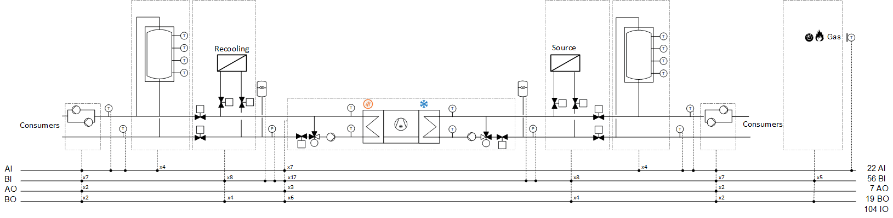
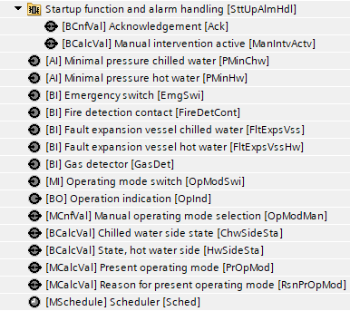
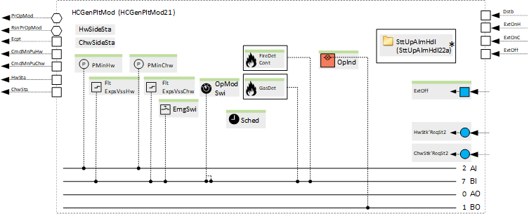
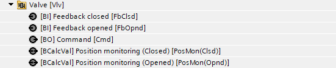
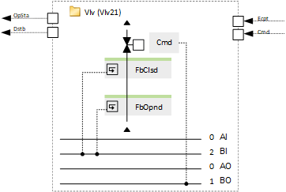
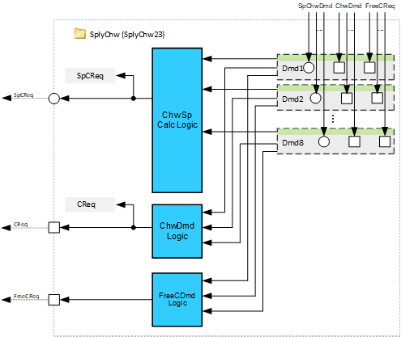

[HCGen21x] 供暖和制冷发电，1 台带热回收功能的冷水机/heat 泵，外部控制
Name: [HCGen21x] [HCGen21x] 供暖和制冷发电，1 台带热回收功能的冷水机/heat 泵，外部控制
Library hierarchy:植物
Plant operating modes
- Off
- On
Plant diagram

主要功能 | 主要部件 |
|---|---|
|
|
|
Heat pump | |
|
|
Sensors, setpoints and control | |
[HCGenCtl21] Sensors, setpoint and control for single heating and cooling generator | |
|
|
Plant operating mode | |
[HCGenPltMod21] Plant operating mode determination for heating and cooling generation | |
 |  |
Main pump group, hot water side (Optional) | |
|
|
Main pump group, chilled water side (Optional) | |
|
|
Shutoff valve, hot water consumer (Flow) (Part of the option "Shutoff valve, hot water consumer") | |
 |  |
Shutoff valve, hot water consumer (Return) (Part of the option "Shutoff valve, hot water consumer") | |
Shutoff valve, recooling (Flow) (Part of the option "Shutoff valve, recooling") | |
Shutoff valve, recooling (Return) (Part of the option "Shutoff valve, recooling") | |
Shutoff valve, chilled water consumer (Flow) (Part of the option "Shutoff valve, chilled water consumer") | |
Shutoff valve, chilled water consumer (Return) (Part of the option "Shutoff valve, chilled water consumer") | |
Shutoff valve, source (Flow) (Part of the option "Shutoff valve, source") | |
Shutoff valve, source (Return) (Part of the option "Shutoff valve, source") | |
Supply chain for hot water (Optional) | |
|
|
Supply chain for chilled water (Optional) | |
|  |